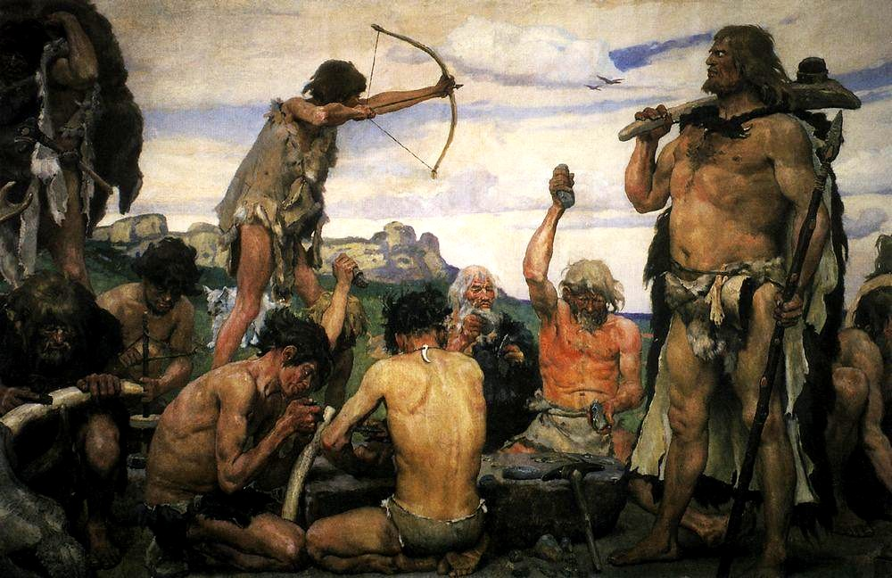
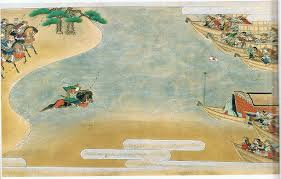
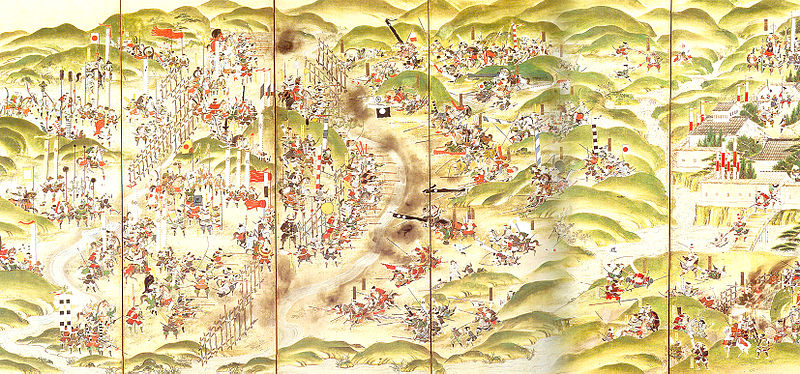

弓道の歴史
弓を引くのに歴史を知る必要はないかもしれません。しかし、過去から学べることも多いです。
ここでは弓道、ひいては弓の歴史を簡単に紹介していこうと思います。
弓の発展と弓道の歴史
さて、弓と言われて皆さんは何を思い浮かべますか？ゲームの武器。天使の持ち物。戦国時代。
現代において弓は、実際に使うのではなく創作物の中で出てくることの方が多いのではないでしょうか。
そんな弓ですが、最初に登場した理由は狩猟や戦いの道具でした。

一方で、儀式的な使われ方もしてきました。奈良時代には弓を使った神事が行われそれを起源とする祭り
や神事が現在でも残っていたりします。
平安時代になると弓術に様々な流派ができ、それぞれの流派で技術や作法は変化していきましたが、戦場
や祭礼、朝廷の行事においてそれぞれ活躍し発展していきました。この時代に、今も有名な流鏑馬が生まれました。
鎌倉時代には弓を用いた精神修行の形が確立されていくと共に、新しい戦闘技術の訓練としていくつかの競
技が生まれました。これらには厳格なルールが存在し、今の弓道に近いものになっています。
また、この時代に弓と言えば平家物語の那須与一の「扇の的」が有名だと思います。皆さんも学校で読んだ
ことがあるのではないでしょうか。

話の内容は端折りますが、弓道的にこの話を見ると那須与一はとんでもない人物です。彼は約72m（弓道では的までの距離は28mか60m）先の扇に
矢を中てたのです。読んだことがある人なら分かると思いますが、この時の場面は海辺です。
そして扇は海上の船の上にありました。そのため波によって上下左右に揺れているし、風も吹いています。
そんな中で与一は中てたのです。彼にとって、今の弓道なら百発百中なんでしょうね。
さて、話を戻しましょう。戦国時代に入ると鉄砲が登場し、弓を武器として使用することは少なくなって
いきました。しかし、精神を鍛えるという意味では弓はまだまだ使われ続けました。

江戸時代では、精神鍛錬という側面の他に一種の曲芸という側面も見せるようになってきました。それによ
って、技術、道具が研鑽され各種流派も発展していきました。
江戸時代の弓道といえば京都三十三間堂の通し矢が有名かと思います。通し矢は流鏑馬については別のページで解説しているので
詳しくはこちらを見てみてください。
明治時代では武術は時代遅れとされ衰退してきましたが、当時の様々な人の努力により弓道を始めとする
武術は消えることはありませんでした。
第二次世界大戦が終わると、当時を代表する弓道家らによって「射法八節」が定められ、現在までその歴史
は受け継がれています。
と、ここまで弓道の歴史をざっくりと書いてみましたが、最初に言ったように、別に歴史を知る必要はありません。
しかし、歴史を知れば弓を引くという行為はただの動作ではなくなります。もっとも、弓を使うと言うこと自体、
歴史に触れていると言えるのではないでしょうか。
もし、これを読んで弓道の歴史に興味が沸いたら是非色々調べてみてください。当然ここには書ききれないような
ことがたくさんあります。
温故知新という言葉の通り、過去を振り返ってみるのも悪いことではないのかもしれません。
出典・脚注
参考文献
・『弓道教本 1巻 射法篇』http://www.sambu.jp/SHOP/K-001.html
参考資料
・『公益財団法人 全日本弓道連盟』http://kyudo.jp/contents/code/ab2 (2015年11月アクセス)
画像引用
・Google画像検索『那須与一』『長篠の戦』『石器時代』(全てライセンスフリーのものを使用しています。)